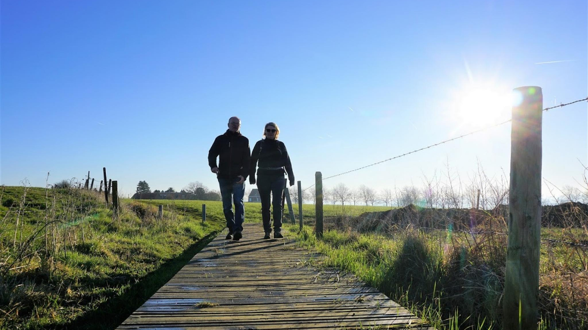
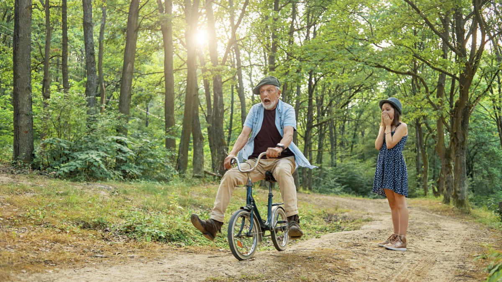

Blogs
-

Ik stap waar het moet!
In deze coronaperiode is er steeds één constante die terugkeert : wandelen! Wandelen is in, wandelen is hot. Maar stap je nu beter links…
februari 8, 2021 Read more -

Western Front Trail, een nieuwe epische trailwalk
De Via Sacra – Western Front Way loopt maar liefst 1.000 km langs No Man’s Land en de Westerse frontlijn. Vertrekkend vanuit Nieuwpoort tot…
februari 18, 2021 Read more -

Wat met de WSVL poncho of rugzak spaaractie?
Omwille van COVID-19 zijn alle wandeltochten onder de vleugels van Wandelsport Vlaanderen momenteel geannuleerd tot 28 februari. Afhankelijk van beslissingen en maatregelen genomen door…
januari 9, 2021 Read more -

Walking Magazine
Vanaf 2021 verschijnt Walking Magazine 4 keer per jaar. Het federatietijdschrift van Wandelsport Vlaanderen vzw valt voortaan telkens de eerste week van maart, juni,…
februari 10, 2021 Read more -

30-30, dat is wandelen in het groen
Een groene, natuurlijke omgeving dichtbij nodigt uit om te bewegen én zorgt dat we het bewegen langer vol houden. Bovendien levert bewegen in het…
februari 5, 2021 Read more -

Honden aan de leiband: JA of NEE?
Loslopende honden zorgen bij mensen, die hiermee geconfronteerd worden, regelmatig voor een onveiligheidsgevoel. Niet enkel honden die onbeheerd rondlopen, maar ook baasjes die hun…
november 17, 2021 Read more